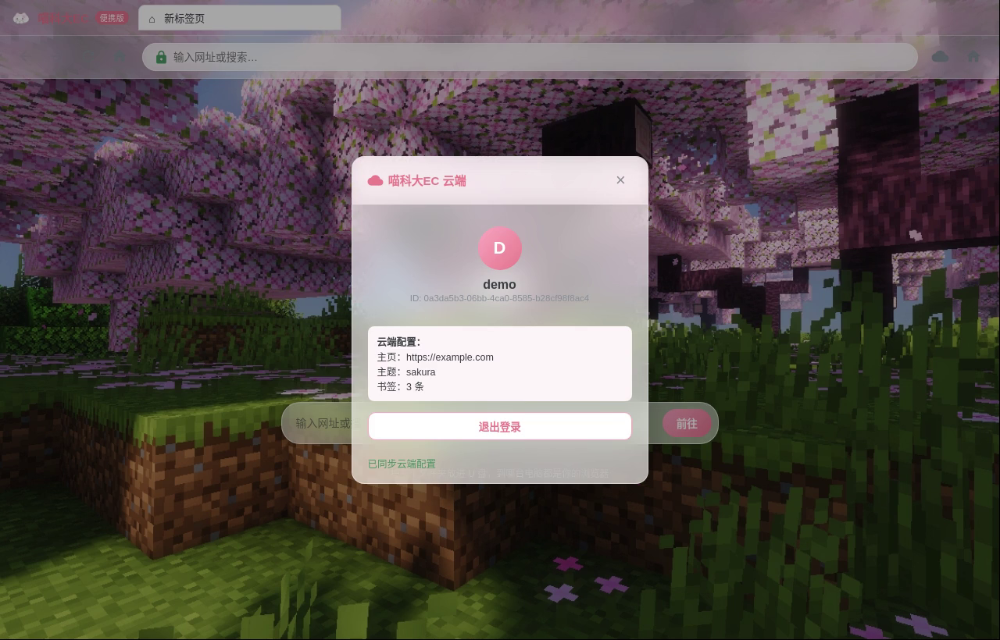

从内核到云端，从部署到运维，喵科大EC提供完整的便携浏览解决方案。
下载即可运行，不写注册表，不残留系统目录。所有配置与数据跟随程序目录，拷贝即完成迁移。
采用与 Chrome 同源的 Chromium 渲染引擎，确保网页兼容性与渲染性能，提供一致的浏览体验。
独立账号体系，登录后自动同步书签、主页、主题与设置。跨设备登录，配置无缝衔接。
启动时自动向云端上报版本，实时比对最新版本。有更新时及时提醒，确保安全与功能同步。
Windows 与 Linux 双平台支持，相同的界面设计、配置格式与便携机制，降低多平台运维成本。
PBKDF2 加盐哈希加密，10万次迭代。独立云端部署，不与第三方账号体系耦合，数据自主可控。
以下为软件实际运行截图。
简洁启动页，地址栏即搜即达

工具栏一键呼出，登录注册便捷
登录后自动下发个人配置
支持 --portable 便携启动参数，用户数据目录自动重定向至程序旁的
data/ 文件夹。无论存放于 U 盘、移动硬盘还是同步盘，
书签、历史记录与登录状态均随程序一同携带。
喵科大EC/
├── 喵科大EC.exe
├── resources/
│ └── app.asar
└── data/
├── bookmarks.json
├── history/
├── settings/
└── Local Storage/
部署于 Cloudflare Worker + KV，全球边缘节点，低延迟高可用。
浏览器启动时自动向云端报告版本与平台信息
云端实时比对版本号，判断是否需要更新
账号验证通过后下发书签、设置与主题配置
新版本发布后，云端自动向用户推送升级提醒
POST /api/register
POST /api/login
GET /api/config
PUT /api/config
GET /api/version
POST /api/version/report
全部版本免安装，下载后即可运行。
所有版本均托管于 GitHub Release，可校验 SHA-256 摘要。